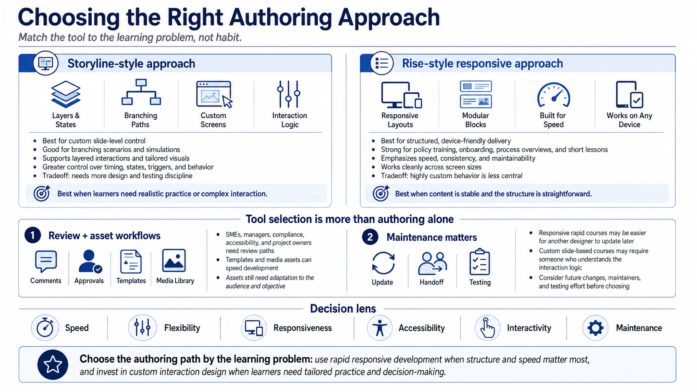

Choosing the Right Articulate 360 Tool
Connecting to LMS... Progress: in progress

Narration
Different course problems call for different authoring approaches. A Storyline-style approach is useful when the course needs custom slide-level control, branching, simulations, layered interactions, or a highly tailored visual experience. It gives the designer more control over timing, states, triggers, and screen behavior, but that flexibility also requires more design and testing discipline.
A Rise-style responsive approach is useful when the goal is structured, device-friendly course delivery with efficient development. It is often a strong fit for policy training, onboarding, process overviews, knowledge transfer, and short lessons that need to work cleanly across screen sizes. The tradeoff is that highly custom screen behavior may be less central than speed, consistency, and maintainability.
Review workflows and asset libraries are part of tool selection too. A course is rarely built by one person in isolation. Subject matter experts, managers, compliance reviewers, accessibility reviewers, and project owners may need a way to comment and approve changes. Templates and media assets can speed development, but they still need to be adapted to the audience and objective.
Choose the tool by the learning problem, not by habit. Rapid development may be the right decision when the content is stable and the structure is straightforward. Custom interaction design may be worth the investment when learners need realistic practice or decisions. Speed, flexibility, responsiveness, accessibility, interactivity, and maintenance all matter, but they do not matter equally for every course.
Tool choice also affects the project team. A rapid responsive course may be easier for another designer to update later. A custom slide-based course may require someone who understands the interaction logic. Before choosing the authoring path, consider who will maintain the course, how often it will change, and how much testing each update will require.